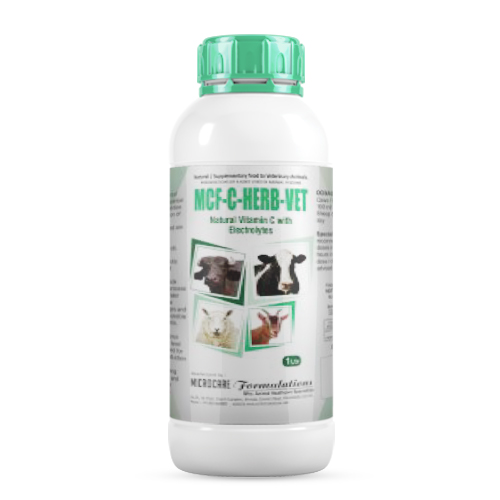
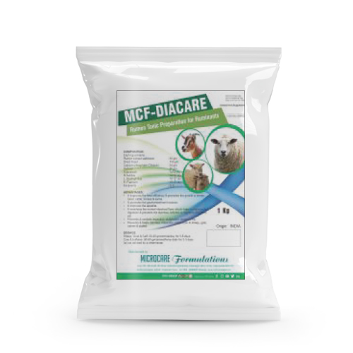
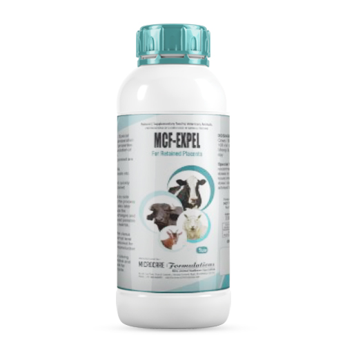
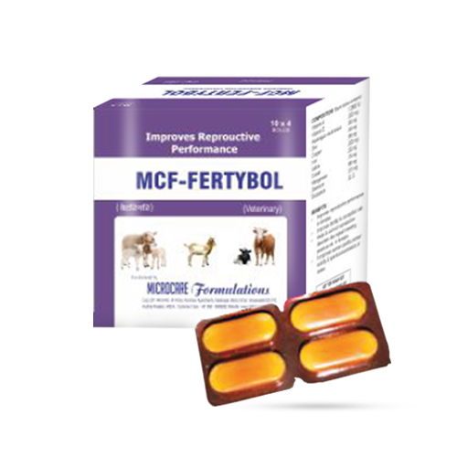
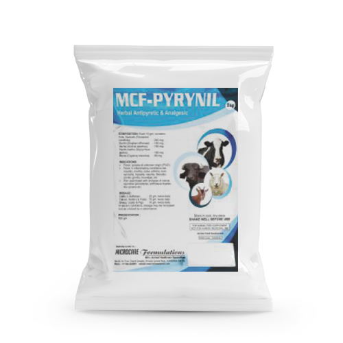
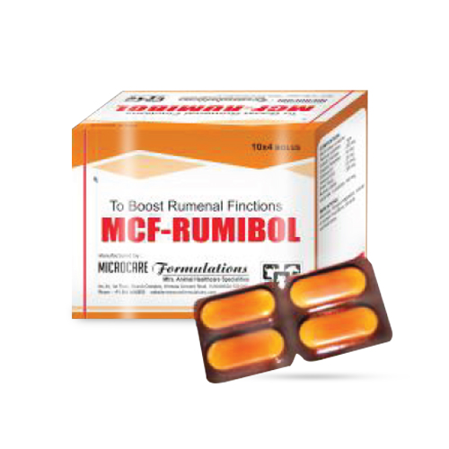
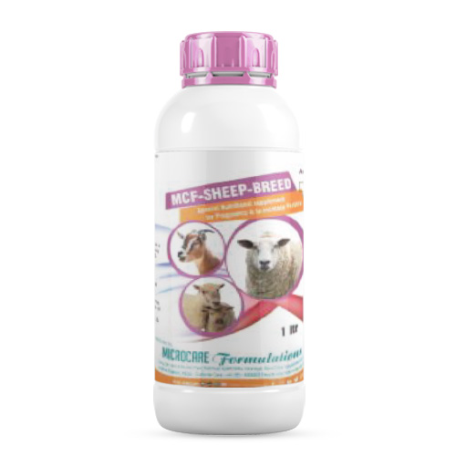
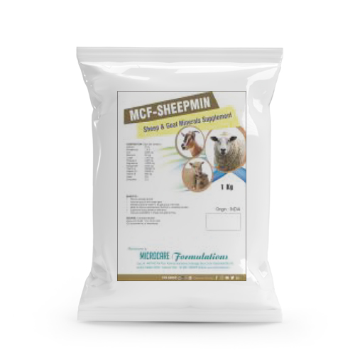
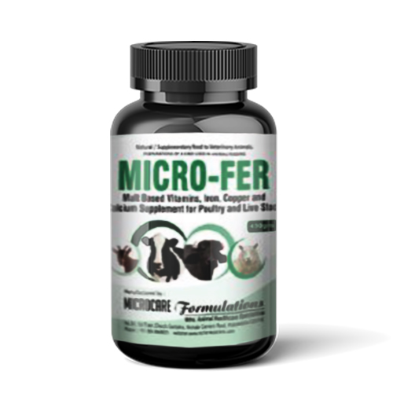

BLOAT OFF
Anti bloat liquid.
Benefits* Acts as spasmolytic agent & allieves the smooth muscle spasm precipitated by accumulation of gas in the instestinal tract.
* Helps to maintain normal ruminal pH.
* Prevents and controls acidosis.
* Controls excessive fermentation to prevent recurrence.
* Relieves from Colic by expulsion of gases immediately.
* Comes to normal digestion process quickly and gets energy.

CALPLUS VET
Calcium & Phosphorus Supplement.
Benefits* Improves milk production.
* Helps for better bone and skeletol strength.
* Prevents hypocalcimia and milk fever.
*Prevents complications like dystocia, retention of placenta, metritis,
mastitis etc.
* Increases growth and body weights of calves.

ELECTROMIN VET
Electrolytes with essential minerals.
Benefits*Regulates fluid & ionic balances & prevents dehydration in animals.
*Prevents performance disturbances.
*Helps to maintain optimum production and yield in dairy animals.
*Provides relief to birds and animals from stress of all kinds.

MCF LAMB CARE
Nutritional Supplement Specially for Lambs and Kids.
Benefits* Special prepara lambs and kids, it provides required nutrients for their proper nourishment.
* Helps to increase resistance power in early stage of life.
* Increases the survival rate of lambs and kids.
* Improves bone and muscle development.
* Improves growth, development and weight gain in lambs are kids.
* Highly useful in -poor growth, poor body weight, poor development, poor
feed intake etc.

MCF RESPIVET
Cough Relief Vet is a special herbal preparation from special selective herbs having functional properties as expectorant, anti inflammatory and anti microbial.
Benefits*Prevents respiratory problems
*As a supportive therapy along with antibiotics during respiratory infections
*Relieves from stress caused due to respiratory distress
*Allows the animal to take enough feed.

MCF-C-HERB-VET
MCF-C-HERB-VRT is a special formulation
prepared from special selective herbs which
are rich source of natural Vitamin C fortified with Electrolytes.
Benefits*Helps to increase the disease resistance power.
*Helps to relieve the animals from stress factors.
*Helps to increase the health and immunity in Animals.
*Helps to increase milk production.

MCF-DIACARE
Rumen Tonic Preparation for Ruminants.
Benefits*It promotes the gastrointestinal functions.
*It improves the appetite.
*It maintains the normal intestinal flora, which helps to improve the
digestion & prevents the diarrhea, enteritis or digestive disorders etc.
*Prevents & controls impaction, indigestion, acidiosis etc.
*Prevents & treats diarrhea, impaction, indigestion in sheep, goat, calves & piglets.

MCF-EXPEL
Special herbal & mineral
preparation having functional properties as ecbolic and involution of uterus in animals. Main herbs incorporated are Rubia
cordifolia, Harmala, Aristolochia bracteata etc.
Benefits*Effectively and quickly expels the retained
Placenta.
*Very safe and no side effects during the process of action and also later.
*Helps to reduce the excessive discharges and so helps to avoid possible
infections like metritis, pyometra etc.

MCF-FERTYBOL
Improves Reprouctive Performance.
Benefits*Helps to increase resistance power in early stage of life
*Increases the survival rate of lambs and kids.
*Improves bone and muscle development.
*Improves growth, development and weight gain in lambs and kids.
*Highly useful in -poor growth, poor body weight, poor development, poor feed intake etc.

MCF PYRYNIL
Herbal Antipyretic & Analgesic.
Benefits* Fever, pyrexia of unknown origin (PUO)
* Fever in inflammatory conditions like mastitis, metritis, osteo arthritis, teno synovitis, myositis, neuritis, fibrositis, coxitis, gonitis, neuralgia, etc.
* Pain associated with prolapse of uterus, operative procedures, soft tissue injuries like sprains etc.

MCF-RUMIBOL
To Boost Rumenal Finctions.
BenefitsAnorexia, Simple indigestion, revival of rumen microflora, corrects ruminal atony.
DOSAGE:
Large Animals
: 2-4 bolus daily
Small animals
: 1-2 bolus daily
(or) as advised by a veterinarian.

MCF-SHEEP MUNE
To improve immunity & to enhance Performance.
Benefits* Provides important nutrients as per the body's requirement of sheep/goat.
* Supplies important minerals like Cobalt, Selenium & Zinc for the development and strengthening immune system in sheep & goat.
* Increases blood production and contributes in growth and development.
* Helps to enhance breeding performance in breeding animals.

MCF-SHEEP TONIC
Minerals & Vitamins fortified with Vegetable Fat & Proteins.
Benefits* Provides essential nutrients to improve growth in growing animals
especially for sheep & goat.
* Helps to increase body weight gain in lamb, kids & calves.
* Helps to maintain general health & to increase milk production in milch
animals.

MCF-SHEEP WELL
Special Sheep Nutritional supplement for Rapid Growth.
Benefits* Highly recommended to achieve weight gain in growing animals
* Helps in bone development and muscle growth.
* Effective in breeding animals to maintain their health and to enhance performance.
* Improves immunity & disease resistance power Also, it contributes to a healthy foot and wool production.
* Live yeast helps to improve feed digestion and its utilization.

MCF-SHEEP-BREED
Special Nutritional supplement for Pregnancy & to increase Fertility.
Benefits* It contributes in the growth and the development of newborns.
* It helps in the development of bones and muscles of newborns.
* It increases the rate of survival of newborns.
* Improves profitability in sheep & goat farming.

MCF-SHEEPΜΙΝ
Sheep & Goat Minerals Supplement.
Benefits*Improve skeletal growth
*Improves growth and weight gain
*Maintains general health in all age group of animals.
*Helps to improve reproductive functions in breeding animals.
*Supportive during selenium deficiency.
*Improves profitability in sheep and goat farming.

MICRO-FER
Malt-based Vitamins, Iron, Copper & Calcium Supplement.
BenefitsAnaemia, General debility, Stunted growth, Iron deficiency, Rickets & Osteomalacia, Anorexia, Lactation stress, Egg breakage, Supportive therapy during diseases etc.

MICROPLEX VET
B.Complex Vitamins.
Benefits* Covers B.Complex Vitamin deficiencies.
* Maintains optimum health and immunity.
* Helps to maintain optimum health & immunity.

OPTILIV VET
Liver Stimulant & Correctant.
Benefits*Corrects liver disorders and brings back to normal healthy conditions.
*Prevents fatty livers, and other liver disorders.
*Helps for better growth & FCR
*Highly useful during antibiotic therapy, disease conditions etc.
*Improves appetite and digestion swine.

STRESS CARE VET
Vitamins A, D3, E, C, B12 Liquid.
Benefits* Provides instant relief from stress conditions like transportation, deworming, vaccinations, disease conditions etc.
* Increases growth & body weights.
* Builds solid immunity.
* Maintains optimum health.